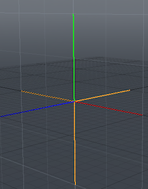

Item gasket¶
Item_gasket.cpp is a basic example plugin. This wiki page is intended as a walkthrough of the code in order to help you better understand the SDK.
This plugin adds the gasket item to the modo item list.
The gasket item.
Code Walkthrough¶
Class Declarations¶
Our classes are organized in a sort of nested structure, and at the base is this class.
This class generates the gasket, so we inherit from Tableau_(lx-tableau.hpp)#.2816.29_User_Class:_TableauSurface_method. The TableauSurface Method is responsible for generating all the triangles that intersect the bounding box.
Additionally, we inherit from Attributes_(lxu-attributes.hpp)#CLxDynamicAttributes, which provides the attributes interface for our gasket.
Inside the class, our first method is our initialize method. Normally, we have this located in a global initialize function, but for this plugin we have our global initialize function call the initialize method that each class declares. This specific method is covered below in the Initialize section.
Following that, we have a class called Corner, which is a simple 3D vector class used to compute the corners of the various primitives.
We have a few functions following that that have the tsrf prefix, indicating that they set certain values related to our tableau surface item, which is part of the item that we this class generates.
The functions after that generate the different elements need to make up the gasket.
class CGasketGenerator :
public CLxImpl_TableauSurface,
public CLxDynamicAttributes
{
...
};
We want this class to create a gasket instance, so we first inherit the Package_(lx-package.hpp)#.2825.29_SDK:_ILxPackageInstance_interface, which allows us to set how certain channels of the instance will update the preview.
Inside the class, our first method is our initialize method. Normally, we have this located in a global initialize function, but for this plugin we have our global initialize function call the initialize method that each class declares. This specific method is covered below in the Initialize section.
We continue on with the theme of nested functions. In our constructor we use a Using a Spawner, which creates COM objects that are not servers. We use this spawner to create an object based on the CGasketGenerator class.
Following this, we have two functions with the pins prefix, indicating that they are redeclarations of virtual functions in the CLxPackageInstance class. These two functions, Initialize and Cleanup, really just add and take away the m_item object from the instance at startup and shutdown of the instance.
The functions that really do the work are the ones with the prti prefix, indicating that they are redeclarations of virtual functions in the CLxImpl_ParticleItem class. The Prepare function adds channels to our m_item object. The Evaluate function takes the values from the channels that we added in previous function and passes them to the CGasketGenerator object, which we created in our constructor, in order to create our gasket object, which we then put in our m_item object.
Finally, once we have finished creating our object, we have a function with the tsrc prefix, which indicates that it is a redeclaration of a virtual function in the CLxTableauSource, that updates the preview window with our object.
class CGasketInstance :
public CLxImpl_PackageInstance,
public CLxImpl_ParticleItem,
public CLxImpl_TableauSource
{
public:
static void
initialize ()
{
CLxGenericPolymorph *srv;
srv = new CLxPolymorph<CGasketInstance>;
srv->AddInterface (new CLxIfc_PackageInstance<CGasketInstance>);
srv->AddInterface (new CLxIfc_ParticleItem <CGasketInstance>);
srv->AddInterface (new CLxIfc_TableauSource <CGasketInstance>);
lx::AddSpawner (SPNNAME_INSTANCE, srv);
}
CLxSpawner<CGasketGenerator> gen_spawn;
CLxUser_Item m_item;
CGasketInstance ()
: gen_spawn (SPNNAME_GENERATOR)
{}
LxResult pins_Initialize (ILxUnknownID item, ILxUnknownID super) LXx_OVERRIDE;
void pins_Cleanup (void) LXx_OVERRIDE;
LxResult prti_Prepare (ILxUnknownID eval, unsigned *index) LXx_OVERRIDE;
LxResult prti_Evaluate (ILxUnknownID attr, unsigned index, void **ppvObj) LXx_OVERRIDE;
/*
* TableauSource interface.
*/
LxResult tsrc_PreviewUpdate (int chanIndex, int *update) LXx_OVERRIDE;
};
We want this class to create the Package_Object.
Inside the class, our first method is our initialize method. Normally, we have this located in a global initialize function, but for this plugin we have our global initialize function call the initialize method that each class declares. This specific method is covered below in the Initialize section.
We continue on with the theme of nested functions. In our constructor we use a Using a Spawner, which creates COM objects that are not servers. We use this spawner to create an object based on the CGasketInstance function. Following this, there are three functions with the pkg prefix. This indicates that they are redeclarations of virtual functions inside the CLxImplPackage class. The first two function, SetupChannels and TestInterface, add channels and an interface to the package that this class creates. Most importantly, however, our Attach function attaches the instance that we created in our constructor to our package item.
class CGasketPackage :
public CLxImpl_Package
{
public:
static LXtTagInfoDesc descInfo[];
static void
initialize ()
{
CLxGenericPolymorph *srv;
srv = new CLxPolymorph<CGasketPackage>;
srv->AddInterface (new CLxIfc_Package <CGasketPackage>);
srv->AddInterface (new CLxIfc_StaticDesc<CGasketPackage>);
lx::AddServer (SRVNAME_PACKAGE, srv);
}
CLxSpawner<CGasketInstance> inst_spawn;
CGasketPackage ()
: inst_spawn (SPNNAME_INSTANCE)
{}
LxResult pkg_SetupChannels (ILxUnknownID addChan) LXx_OVERRIDE;
LxResult pkg_TestInterface (const LXtGUID *guid) LXx_OVERRIDE;
LxResult pkg_Attach (void **ppvObj) LXx_OVERRIDE;
};
./Server_Tags¶
Servers tags are examined when the server is initialized, and give information about the server. We set the tags in this case by taking descinfo[] arrays and associating the relevant data with the corresponding flags.
These tags indicate that the CGasketPackage is of the super type Locator.
LXtTagInfoDesc CGasketPackage::descInfo[] = {
{ LXsPKG_SUPERTYPE, LXsITYPE_LOCATOR },
{ 0 }
};
./Initialize_(index)¶
Servers are extensible set of features that we add to modo, usually through plugins. Intialize is called when we add the plugin to modo, and is the utility that exports the server.
As the initialize methods have been written inside the class declarations, we call those functions for our global initialize functions.
void
initialize ()
{
CGasketPackage :: initialize ();
CGasketGenerator :: initialize ();
CGasketInstance :: initialize ();
}
This method adds a new server dependent on the CGasketGenerator class that uses the TableauSource and Attributes interfaces.
1 2 3 4 5 6 7 8 9 | CGasketGenerator::initialize ()
{
CLxGenericPolymorph *srv;
srv = new CLxPolymorph<CGasketGenerator>;
srv->AddInterface (new CLxIfc_TableauSurface<CGasketGenerator>);
srv->AddInterface (new CLxIfc_Attributes <CGasketGenerator>);
lx::AddSpawner (SPNNAME_GENERATOR, srv);
}
|
This method adds a new server dependent on the CGasketInstance class that uses the PackageInstance, ParticleItem, and TableauSource interfaces.
1 2 3 4 5 6 7 8 9 10 | CGasketInstance::initialize ()
{
CLxGenericPolymorph *srv;
srv = new CLxPolymorph<CGasketInstance>;
srv->AddInterface (new CLxIfc_PackageInstance<CGasketInstance>);
srv->AddInterface (new CLxIfc_ParticleItem <CGasketInstance>);
srv->AddInterface (new CLxIfc_TableauSource <CGasketInstance>);
lx::AddSpawner (SPNNAME_INSTANCE, srv);
}
|
This method adds a new server dependent on the CGasketPackage class that uses the Package and StaticDesc interfaces.
1 2 3 4 5 6 7 8 9 | CGasketPackage::initialize ()
{
CLxGenericPolymorph *srv;
srv = new CLxPolymorph<CGasketPackage>;
srv->AddInterface (new CLxIfc_Package <CGasketPackage>);
srv->AddInterface (new CLxIfc_StaticDesc<CGasketPackage>);
lx::AddServer (SRVNAME_PACKAGE, srv);
}
|
Implementations¶
This section defines certain constants/shortcuts that we use.
1 2 3 4 5 6 7 8 9 10 11 12 13 14 15 16 | #define Cs_TYPE "type"
#define Cs_LEVEL "level"
#define TYPEi_SQUAREHOLE 0
#define TYPEi_SQUAREFLAKE 1
#define TYPEi_SERPINSKI 2
#define TYPEi_TETRAHEDRON 3
static LXtTextValueHint hint_typechan[] = {
TYPEi_SQUAREHOLE, "squareHole",
TYPEi_SQUAREFLAKE, "squareFlake",
TYPEi_SERPINSKI, "serpinski",
TYPEi_TETRAHEDRON, "tetrahedron",
-1, "=gasket_toy-type",
0, NULL
};
|
The package has a set of standard channels with default values. These are setup at the start using the AddChannel interface. The gasket has a type and an iteration count (which needs a low default, since these can get huge really quickly).
1 2 3 4 5 6 | LxResult
CGasketPackage::pkg_SetupChannels (
ILxUnknownID addChan)
{
...
}
|
TestInterface() is required so that nexus knows what interfaces instance of this package support. Necessary to prevent query loops.
1 2 3 4 5 6 | LxResult
CGasketPackage::pkg_TestInterface (
const LXtGUID *guid)
{
...
}
|
Attach() is called to create a new instance of this item. The returned object implements a specific item of this type in the scene.
1 2 3 4 5 6 | LxResult
CGasketPackage::pkg_Attach (
void **ppvObj)
{
...
}
|
Gasket Item Instance-The instance is the implementation of the item, and there will be one allocated for each item in the scene. It can respond to a set of events. Initialization typically stores the item it’s attached to.
1 2 3 4 5 6 7 | LxResult
CGasketInstance::pins_Initialize (
ILxUnknownID item,
ILxUnknownID super)
{
...
}
|
The particle interface initializes and returns a particle object, which is then used to access particle data. This first method is passed an evaluation object which selects the channels it wants and returns a key index.
1 2 3 4 5 6 7 | LxResult
CGasketInstance::prti_Prepare (
ILxUnknownID evalObj,
unsigned *index)
{
...
}
|
Once prepared, the second method is called to actually create the object and initialize its state from the channel values.
1 2 3 4 5 6 7 8 9 10 11 12 13 14 15 16 | LxResult
CGasketInstance::prti_Evaluate (
ILxUnknownID attr,
unsigned index,
void **ppvObj)
{
...
}
LxResult
CGasketInstance::tsrc_PreviewUpdate (
int chanIndex,
int *update)
{
...
}
|
Gasket Particle Object-The particle object can be enumerated by a client to get the data for all particles. It also can preset an attributes interface to allow the client to set hints, in this case the random seed.
CGasketGenerator::CGasketGenerator ()
{
...
}
Like tableau surfaces, particle sources have features. These are the properties of each particle as a vector of floats. We provide the standard 3 particle features: position, transform, and ID.
unsigned int
CGasketGenerator::tsrf_FeatureCount (
LXtID4 type)
{
...
}
LxResult
CGasketGenerator::tsrf_FeatureByIndex (
LXtID4 type,
unsigned int index,
const char **name)
{
...
}
Given a tableau vertex allocated by the client, we need to determine the features they want and their offsets into the vertex vector.
LxResult
CGasketGenerator::tsrf_SetVertex (
ILxUnknownID vdesc)
{
...
}
Sampling walks the particles. This will be done by traversing the fractal geometry recursively.
LxResult
CGasketGenerator::tsrf_Sample (
const LXtTableauBox bbox,
float scale,
ILxUnknownID trisoup)
{
...
}
Square gasket root: makes a flat square.
void
CGasketGenerator::Square9 ()
{
...
}
Square gasket recursion will split the square into 9 sub-squares. The hole mode is an 8-fold multiplier that leaves out the middle, and the flake mode is a 5-fold multiplier that leaves out the corners.
void
CGasketGenerator::Square9Gen (
const CCorner &cc,
const CCorner &c0,
const CCorner &c1,
const CCorner &c2,
const CCorner &c3,
float level)
{
...
}
Serpinski starts with an equilateral triangle. Each level splits the edges evenly and recurses on the three corner triangles.
void
CGasketGenerator::Serpinski ()
{
...
}
void
CGasketGenerator::SerpinskiGen (
const CCorner &cc,
const CCorner &c0,
const CCorner &c1,
const CCorner &c2,
float level)
{
...
}
Tetrahedron is four points evenly spaced. Each edge is split and the four corners become half-sized tetrahedrons.
void
CGasketGenerator::Tetrahedron ()
{
...
}
void
CGasketGenerator::TetrahedronGen (
const CCorner &cc,
const CCorner &c0,
const CCorner &c1,
const CCorner &c2,
const CCorner &c3,
float level)
{
...
}
To send a particle to the client we set the position and ID, if requested (the transform is fixed in this example). Then we generate a single point. This will interpolate between the parent center position and the real center position for intermediate levels.
void
CGasketGenerator::Point (
const CCorner &parent,
const CCorner ¢er,
float level)
{
...
}